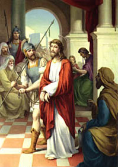

I. állomás: Jézust halálra ítélik

"Te vagy a zsidók királya?" (Jn 18,33) - "Az én országom nem ebből a világból való; ha az én országom ebből a világból volna, szolgáim harcra kelnének, hogy a zsidók kezébe ne kerüljek. De az én országom nem innen való" (Jn 18,36). Pilátus hozzá tette: "Tehát király vagy te?" Jézus így válaszolt: "Te mondod, hogy király vagyok. Arra születtem és azért jöttem a világba, hogy tanúságot tegyek az igazságról. Mindaz, aki az igazságból való, hallgat a szavamra". Pilátus erre így szólt: "Mi az igazság?" A római helytartó e ponton befejezte a kérdezősködést. Elment a zsidókhoz és kijelentette nekik: "Én semmi vétket nem találok benne" (Jn 18,38). Pilátus drámája e kérdésben rejlik: "Mi az igazság?" Ez nem egy filozófiai kérdés volt az igazság természetére vonatkozólag, hanem egzisztenciális kérdés a saját igazsághoz való viszonyáról. Kísérlet, hogy meneküljön a lelkiismerete szava elől, amely kényszerítő erővel kötelez az igazság felismerésére és követésére, valamint készségessé tesz egészen odáig, hogy kimondjuk egy ártatlan ember felmentő ítéletét. A vádlók megérzik Pilátusnak ezt a gyengeségét, ezért nem hagyják abba. Eltökéltséggel követelik a kereszthalált. Pilátus fél-intézkedését elutasítják. Nem elegendő a kegyetlen megostorozás büntetése, amelyet a vádlottra rótt. Amikor a helytartó a megostorozott és tövissel koronázott Jézust bemutatja a tömegnek, úgy tűnik, keresi a szót, közleményét, amellyel lenyugtathatná a tér türelmetlenségét. Jézusra mutatva mondja: "Ecce homo!" Íme az ember! Ám a válasz ez: "Feszítsd meg, feszítsd meg!" Akkor Pilátus folytatja a vitát: "Vegyétek át és feszítsétek ti meg; én nem találok semmi vétket benne" (vö. Jn 19,5-7). Egyre inkább meg van győződve róla, hogy a Vádlott ártatlan, de ez nem elég számára ahhoz, hogy egyetemes ítéletet mondjon. A vádlók előhozakodnak az utolsó okkal: "Ha ezt szabadon bocsátod, nem vagy a császár barátja! Mindenki, aki királlyá teszi magát, ellenszegül a császárnak" (Jn 19,12). Világos a fenyegetőzés. Veszélyes lehet számára. Pilátus végleg megtörik, s kimondja az ítéletet. Nem anélkül azonban, hogy ne adná kézmosása feltűnő jelét: "Nem vállalok felelősséget (...) ezért a vérért. Ti lássátok!" (Mt 27,24) Ilyen módon ítélték kereszthalálra Jézust, az élő Isten Fiát, a világ megváltóját. A századok során mennyi szenvedést és halált jelentett az igazság tagadása! Az ártatlanoknak kell megfizetniük az emberi képmutatás díját. A fél-ítéletek nem kielégítőek. Nem elég mosni a kezünket. Az igaz ember véréért való felelősség megmarad. Ezért imádkozott Krisztus oly nagy odaadással minden idők tanítványaiért: Atyám, "szenteld meg őket az igazságban. A te szavad igazság" (Jn 17,17).
Krisztusunk, aki elfogadtad az igazságtalan ítéletet, add meg nekünk és korunk minden emberének azt a kegyelmet, hogy hűségesek legyünk az igazsághoz, és ne engedjük, hogy ránk és az utánunk jövőkre nehezedjék az ártatlanok szenvedése miatti felelősség súlya. Neked Jézus, igaz Bíránk, tisztelet és dicsőség mindörökkön örökké. Amen.